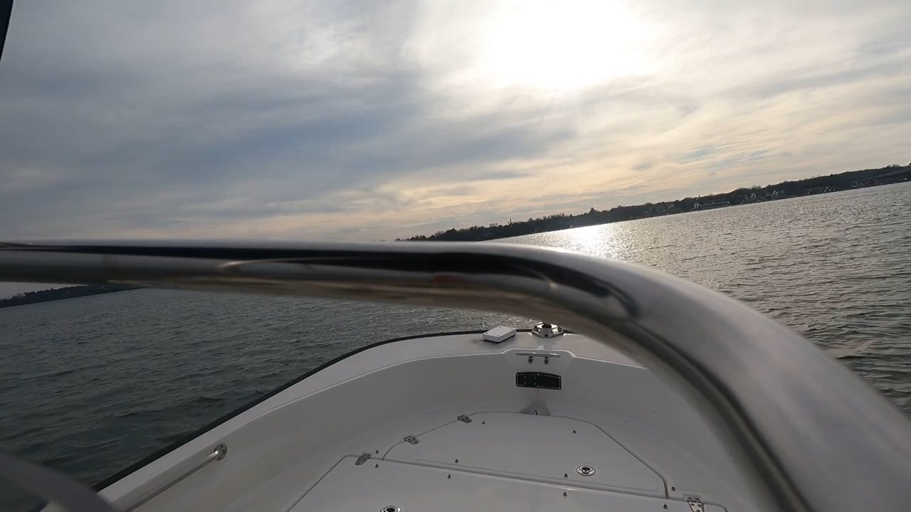
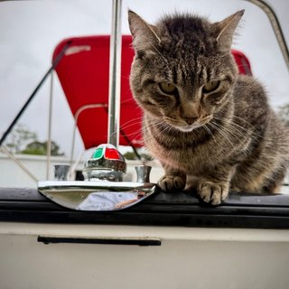
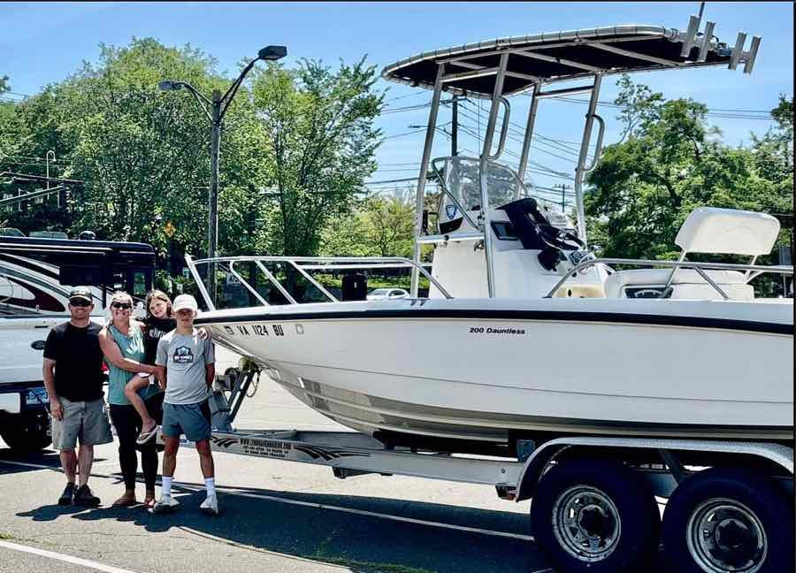
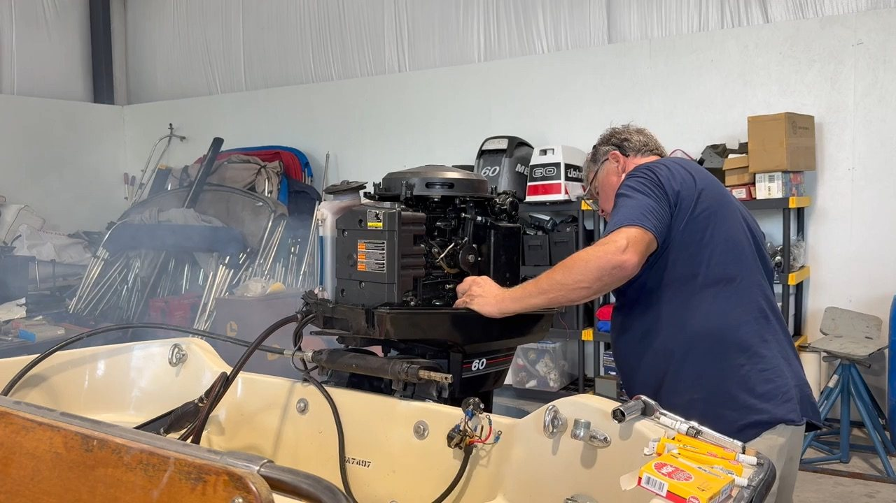

I think about Boston Whalers more than is strictly normal.
I am Dave. I buy them, go over them, run them on the York River, and write down what I find — which hulls hold up, which ones are worth saving, what power actually suits them. Most of this page is that. Some of them are also for sale.
Call between ten and seven and ask me whatever you like. Happy to talk about a boat you already own, or one you are thinking of buying from somebody else. Would love to hear from you.
— Dave, (757) 329-9979


TillywebmasterNotes from the yard
All of them →Boats arriving, boats leaving, what turned up when the floor came out, and the occasional digression. Written as things happen.
Not everything is on the list
Boats come in faster than I get round to writing them up, and a fair few are spoken for before they ever make the page. There are usually others in the yard, or on their way, or sitting under a cover somewhere while I decide what to do about them.
So if you know what you are after — or you only half know — tell me and I will keep an eye out. Finding somebody the right boat is most of what I actually do.
(757) 329-9979 · ten until seven, every day but Christmas
New owners
Every boat here leaves to somebody in particular — sea trialled, gone over, and put on a truck to a driveway. A fair few people send a photograph back once they have had it out, which is the best part of the job.
If you have just taken one home, send me a picture.


Before anything leaves
Ron goes over every boat
- 01Compression checked, fluids and plugs done, every system run and confirmed working.
- 02Then it goes on the water for sea trials. Usually that is me driving.
- 03Only then does it go on a truck. I deliver anywhere in the United States.
Ron also has a habit of buying the ones he likes, which is usually a good sign about the boat.
Folks I work with
Nobody does this on their own. Trailers, canvas, transport, and the odd favour.


- Great Lakes Boat Top
- Wm. J. Mills & Co.
We are an EZ Loader dealer now — that one started with an unscheduled stop at their plant in Port St. Lucie. And Luke at Coastal Transport has driven more of these up the eastern seaboard than anybody should have to.
Boats for sale
What is written up and ready to go. There are usually a few more than this — ring me if you do not see it.
Nothing in that combination. Try Any, or ring me — things move.
Notes from the yard
Boats arriving, boats leaving, and the occasional digression. Written as things happen, so the older ones are about boats long gone.